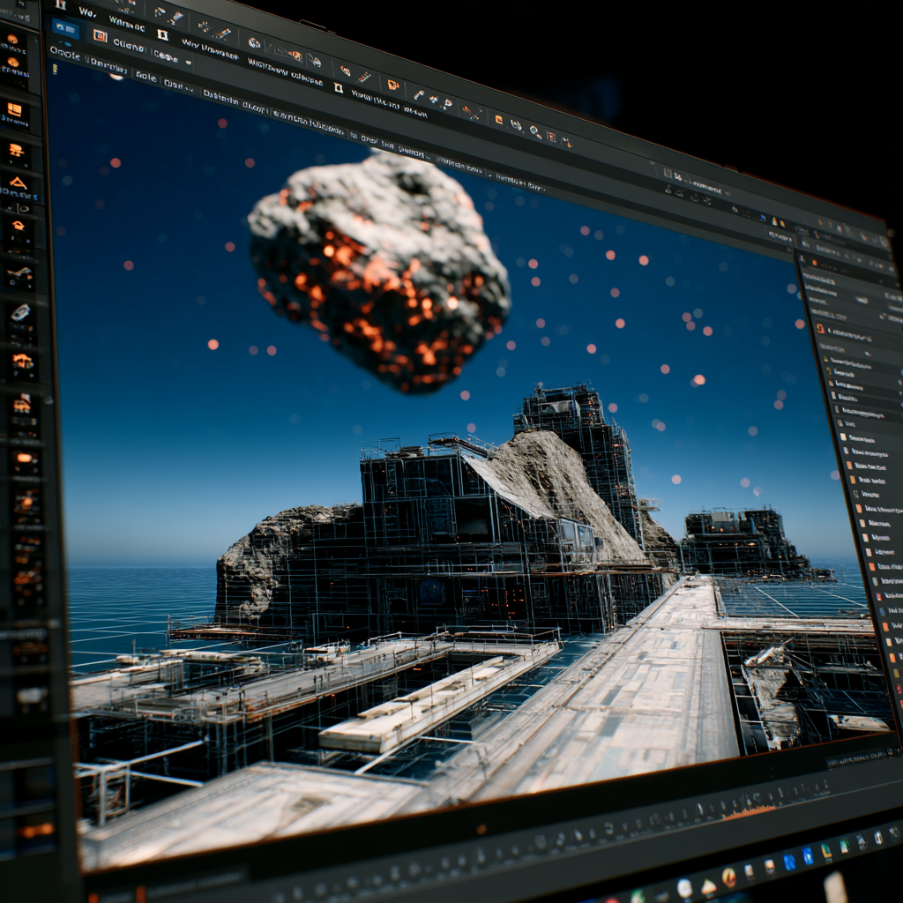

Início do Projeto
"Não Olhe Para Cima" é uma sátira provocativa que retrata a descoberta de um cometa com rota de colisão direta com a Terra. Dois cientistas, ao perceberem a gravidade da ameaça, enfrentam o desafio de alertar o mundo e mobilizar uma resposta eficaz. No entanto, são desacreditados, ignorados pela mídia, ridicularizados nas redes sociais e enfrentam a resistência de um sistema político paralisado por interesses econômicos e vaidades ideológicas.
O filme, dirigido por Adam McKay, é um espelho mordaz da sociedade moderna e da forma como lidamos com crises existenciais. Ao mesclar humor ácido com crítica social, a narrativa expõe o colapso da comunicação científica, a banalização da verdade e a fragilidade das estruturas de poder diante de uma ameaça concreta.
Toda a estética, estrutura e urgência apresentadas neste site são diretamente inspiradas nesse enredo cinematográfico. O alerta de impacto iminente, os dados simulados e as seções dedicadas à ameaça, personagens e decisões refletem, de maneira simbólica, os mesmos dilemas enfrentados no longa-metragem: ignorar ou agir, negar ou compreender.
Este ambiente digital serve como uma extensão reflexiva do filme, provocando o visitante a questionar: se fosse verdade, estaríamos preparados?
Ameaça Detectada
Detectado pela astrônoma Kate Dibiasky e confirmado pelo Dr. Randall Mindy, o cometa Dibiasky possui um diâmetro estimado de 9 a 10 quilômetros — grande o suficiente para causar um evento de extinção global.
Com uma trajetória confirmada de colisão direta com a Terra em pouco mais de seis meses, a descoberta foi inicialmente ignorada por autoridades e pela mídia.
A velocidade estimada do impacto ultrapassa os 20 km/s, liberando energia equivalente a bilhões de bombas nucleares. A falha em tomar decisões imediatas levou a consequências catastróficas no cenário retratado.
O cometa simboliza os perigos da desinformação e da negação científica diante de uma crise real.
Detalhes do Jogo
AUREON é um jogo de simulação estratégica onde o jogador assume o controle de decisões críticas durante uma crise global sem precedentes: a aproximação de um asteroide com potencial de extinção. Inspirado em eventos fictícios e narrativas cinematográficas como "Não Olhe Para Cima", o jogo recria a tensão e os dilemas enfrentados por governos, cientistas e populações diante de um desastre anunciado. O jogador terá que coordenar ações de defesa, lidar com política internacional, equilibrar decisões éticas e sobreviver à desinformação. Cada ação tomada — ou negligenciada — impacta o destino da civilização.
A jogabilidade combina estratégia em tempo real com gerenciamento de recursos, eventos aleatórios, diplomacia e simulação social avançada. Com múltiplos finais possíveis, AUREON oferece uma experiência única a cada partida. Suas decisões moldam o desenrolar de uma crise global em tempo real, em um mundo vivo onde governos reagem, a mídia influencia e a população entra em pânico. A cada escolha, o jogador confronta o dilema entre sobrevivência, sacrifício e verdade.
Velocidade de Aproximação
Região de Impacto
Tecnologia Aplicada
Para dar vida ao universo de AUREON, foram utilizadas algumas das ferramentas mais poderosas do desenvolvimento moderno de jogos. A base visual do projeto é construída na Unreal Engine 5, um dos motores gráficos mais avançados do mundo. Ela oferece recursos como renderização em tempo real, modelagem com Lumen e Nanite, simulação de física complexa e iluminação dinâmica. A interface de desenvolvimento permite manipular com precisão cada elemento do ambiente, como mostrado na imagem ...

Além disso, a criação e animação de personagens foram feitas com suporte de softwares como o Blender, uma plataforma de modelagem 3D open-source amplamente utilizada na indústria. Ele possibilita esculpir, texturizar, animar e exportar personagens em alta qualidade diretamente para motores como a Unreal. Também são utilizados recursos de IA para otimização de expressões faciais e sincronização labial.
Ferramentas auxiliares como Substance Painter para texturização, Quixel Bridge para ativos realistas e Niagara para efeitos visuais avançados também fazem parte da pipeline de produção do jogo.
Para garantir uma experiência imersiva e coerente com a proposta narrativa de AUREON, também foram incorporados sistemas de inteligência artificial que ajustam a ambientação sonora, a iluminação dinâmica e a resposta dos NPCs em tempo real, de acordo com as decisões do jogador. A integração entre ferramentas gráficas e módulos comportamentais da IA cria um mundo vivo, adaptativo e emocionalmente responsivo, onde cada escolha impacta diretamente o desenvolvimento da história e o desfecho da missão.
Além disso, o sistema de partículas foi programado para reagir a eventos críticos do jogo, como explosões atmosféricas, fragmentação do asteroide e falhas estruturais globais. Cada efeito visual é cuidadosamente sincronizado com o áudio espacial e com os sistemas de física realista da Unreal Engine, criando uma experiência sensorial altamente envolvente. A combinação de shaders personalizados e pós-processamento garante que o ambiente transmita urgência, beleza e destruição de forma cinematográfica.
Impacto Global

Equipe Criadora
Equipe fictícia Projeto AUREON - Design inspirado em painéis de comando futuristas e temas cyberpunk
Ícones fornecidos por Font Awesome v6.